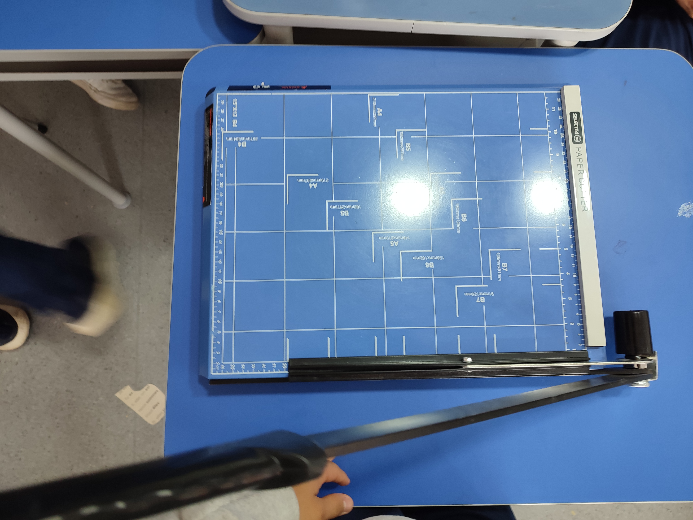
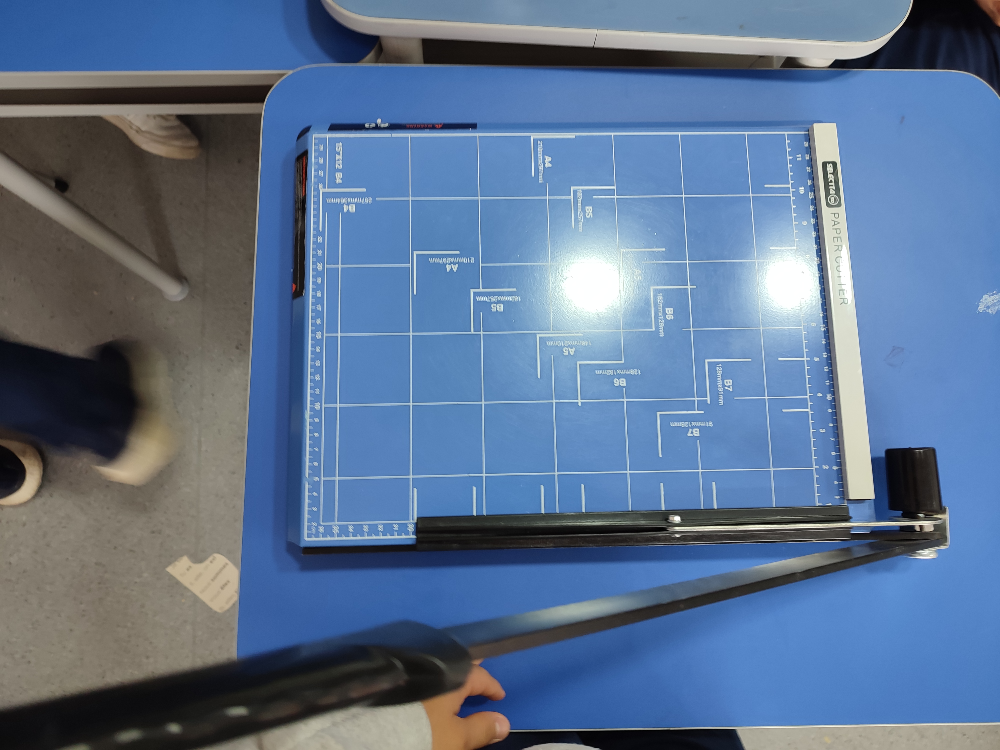

Áreas de CAS
- Creatividad: No hubo elemento de creatividad en esta experiencia CAS.
- Actividad: La creación de los cuadernos no fue físicamente exigente; mi papel era simplemente cortar papel.
- Servicio: Los cuadernos creados durante la actividad serán donados a niños del Chocó que los necesitan.
Etapas de CAS
- Investigación: Para comenzar a trabajar, tuvimos que prestar atención a las instrucciones para entender como crear los cuadernos adecuadamente.
- Preparación: Tuvimos que venir preparados a las sesiones con los materiales que necesitabamos, así como colores o papel. Yo trajé dos cajas de cereal, que sirvieron para crear las portadas de dos cuadernos.
- Acción: Nuevamente, la creación de los cuadernos no fue físicamente exigente, simplemente estuve sentado por aproximadamente dos horas cortando papel.
- Demostración: En sí, contribuí al trabajo con dos cajas de cereal y al cortar adecuadamente fácilmente varias cientas de hojas en las medidas correctos.
- Reflexión: Algunas veces, intentaba cortar demasiadas hojas a la vez, lo cual resultaba en un corte desordenado y dentado, y la pérdida de, entre las tres sesiones, aproximadamente 20 a 30 hojas. Esto me enseñó a tener mas cuidado y ser más paciente.
Atributos del IB
- Indagadores: Tuvimos que prestar atención sobre el proceso de creación de un cuaderno.
- Instruidos
- Pensadores
- Comunicadores: Tuvimos que demostrar ciertas habilidades comunicativas para mantener un ambiente de trabajo eficiente, debido a la naturaleza de producción similar a una línea de montaje.
- Íntegros
- Mente abierta
- Solidarios
- Audaces
- Balanceados
- Reflexivos: El proceso de creación de los cuadernos no fue el ideal, ya que no trabajábamos a máxima productividad y, a menudo, nos distraíamos. Para mejorar, necesito poder concentrarme más y ser menos propenso a distraerme, así como ser más cuidadoso con mis decisiones, ya que desperdicié al menos un par de docenas de hojas de papel al querer cortar demasiadas a la vez.
Resultados de aprendizaje
- Identificar fortalezas y debilidades: Pude usar el cortador de papel con bastante facilidady cometiendo relativamente pocos errores, aunque me distraía con frecuencia con mi teléfono o mis compañeros porque me estaba aburriendo de la tediosa tarea.
- Enfrentar desafios: A pesar de mi aburrimiento con la actividad, hice lo mejor que pude para limitar el tiempo que perdía y aun así trabajé mucho, contribuyendo significativamente a la cantidad total de papel que cortó mi grupo.
- Iniciar y planificar: Organicé los tipos de papel que estaba cortando.
- Compromiso y perserverancia: Mostré compromiso y perseverancia porque trabajé diligentemente durante las tres sesiones, perdiendo poco tiempo y siendo muy productivo en general.
- Trabajo en equipo y colaborativo: Para alcanzar los objetivos de producción que nos habíamos fijado, el proceso de producción fue una fabricación al estilo de una línea de montaje, donde la colaboración y el trabajo en equipo eran esenciales.
- Cuestiones de importancia global: La experiencia de CAS se basó en un tema de importancia mundial, ya que estábamos ayudando a niños desfavorecidos con uno de los derechos más importantes pero menos respetados en todo el mundo: la educación.
- Aspecto ético: La naturaleza de la experiencia de CAS fue éticamente correcta, ya que estábamos ayudando a los niños. Además, el método de fabricación fue muy ético, ya que utilizamos materiales reciclados. Sin embargo, la imprudencia a menudo significó que desperdiciáramos algunos de estos materiales.
Evidencias


 
